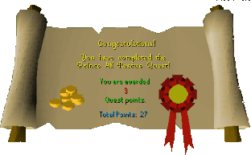

Prince Ali Rescue
Description: Prince Ali of Al Kharid has been kidnapped by the scheming Lady Keli. You are hired to stage a rescue mission.Difficulty: Novice
Length: Long
Items & Skills Needed:
(All items can be obtained during the quest)- or
Recommended:
- or a
Reward: 3 Quest points, 700 coins, free passage through the Al Kharid gate
Instructions:
Start the quest by talking to Hassan in the southern room of Al Kharid Palace. He'll tell you to speak with Osman. Talk to him again and complain about the heat, and he will hand you a jug of water. Keep it for later.
Go north west outside the palace and talk to Osman. Tell him Hassan sent you and you need instructions. He'll tell you Lady Keli has captured the prince, and you need to stage a rescue. Ask him about the two things you must do. One is to make a disguise and the other is to make an imprint of a key.
WARNING: Do not AFK around the jail as the guards can easily kill you.
The Disguise
Head over towards Draynor Village, find Leela. Just east of Ned and northwest of the Jail, you will find Leela. You'll tell her you are there to help her free the prince, then she will tell you all that she knows so far and tips on how to get all the materials together.
Find and talk to Aggie the witch in the middle courtyard or in her house. She can make you the skin paste and yellow dye. You will need 2 onions, pot of flour, redberries, jug/bucket of water, ashes, and 5 coins.
Talk to Ned, bring him 3 balls of wool he can make you a wig for the disguise. Use your yellow dye on the wig.
If you do not already have a rope, Ned can make rope for 4 balls of wool or you can purchase one from him for 15 coins.
The Key
Make sure you have the soft clay in your inventory, head east of Draynor village to the jail, and talk to Lady Keli.
Tell her you've heard of her; she's famous all over RuneScape.
Then ask her what her latest plan is, then she will tell you about the prisoner.
Ask her how she is so sure no one will break him out. She will tell you about the key around her neck.
Ask her if you can see the key, then ask if you can touch it for a moment. You'll make an imprint of the key in the clay.
Go back to Osman in Al Kharid with the key imprint and a bronze bar. He will tell you to pick up the key from Leela.
Head back towards Draynor Village and talk to Leela to obtain the jail key.
Rescuing Prince Ali
Go into the jail nearby, close the door to trap the guards/jailers outside. Make sure Joe, the Guard, is inside and the other guards are outside for an easier time.
Talk to Joe, the guard near the cell, and tell him you have a beer. "Fancy one?" You'll then ask him if he wants another and automatically hand them to him, and he will drink all 3 and get drunk.
Use a rope on Lady Keli to tie her up, then use your key on the cell door and talk to the prince. He will take the disguise and run off.
Return to Hassen in Al Kharid and talk to him... congratz! You're now a friend of Al Kharid and can pass through the gate for free.
Congratulations, Quest Complete!

This quest guide was written on RuneHQ by xxteargodxx. Thanks to Fran 2004 for corrections.
This quest guide was entered into the database on Thu, Mar 04, 2004, at 12:28:14 AM by Weezy and was last updated on Thu, Sep 25, 2025, at 04:14:03 AM by Halogod35.